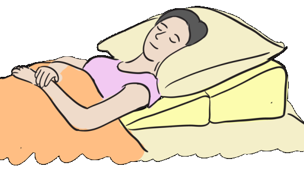

Module: Scleroderma: Basic Overview
Elaine A. Furst, RN, MA, Janet L. Poole, Ph.D., OTR/L, Cindy Mendelson, PhD, RN, Dinesh Khanna, MD, MS
Resources
The following link to “Digestive System (Gut, Gastrointestinal) Involvement in scleroderma” provides information on the medications, life style changes, and treatment of digestive system problems in persons with scleroderma.
Link to “Digestive System (Gut, Gastrointestinal) Involvement in scleroderma”
The following link to “Eating Well with scleroderma” provides information on nutrition for persons with scleroderma.
Link to “Eating Well with scleroderma”
Gastrointestinal (GI)
Also see Module on Dysphagia and Digestive Tract and Module on Mouth and Teeth Care.
Most people with scleroderma have GI involvement of one kind or another, so the following suggestions might be useful.
Upper GI
Preventive dental care using flossing appliances and pediatric toothbrushes is important to maintain dental health, especially when people have microstomia (small mouth) and decreased saliva production. Regular dental visits are also important, and dentists with experience in treating people with scleroderma are very helpful. These dentists are usually found in a university hospital setting. Using assistive devices such as floss handles can assist in dental care.
GERD can often be controlled by avoiding alcohol and greasy, fatty, or spicy foods; tobacco; and coffee. Additional measures may include raising the head of the bed using risers or a wedge pillow under the head of the bed. Persistent GERD may require liquid antacids and/or prescription medication, such as proton pump inhibitors. It is important to control this symptom because GERD can cause inhalation of food or liquids into the lungs, irritation of the esophagus, and scarring of the esophagus (stricture).
Systemic scleroderma can cause abnormally slow movement (dysmotility) of food through a narrowed esophagus and thus cause swallowing difficulties (dysphagia). These conditions may require eating food that is more liquid or softer. Pureeing foods may be necessary. People with scleroderma should eat slowly and chew food thoroughly. Avoid crackers, bread, or bagels, as these may stick in the throat. Keeping upright after meals uses gravity to keep food and gastric acids in the stomach rather than having them back up into the esophagus.
Lower GI
The dysmotility and scarring that can occur in the upper GI tract can also occur in the lower tract, resulting in constipation and/or diarrhea, pseudo-obstruction (a condition with the same symptoms as a blockage of the intestines, such as cramps, nausea, and vomiting), and an increase in the growth of bacteria in the intestine. Significant weight loss may occur. Fiber, fluids, and exercise can generally help relieve the constipation or diarrhea.
The following link to “Digestive System (Gut, Gastrointestinal) Involvement in scleroderma” provides information on the medications, life style changes, and treatment of digestive system problems in persons with scleroderma.
Link to “Digestive System (Gut, Gastrointestinal) Involvement in scleroderma”
The following link to “Eating Well with scleroderma” provides information on nutrition for persons with scleroderma.